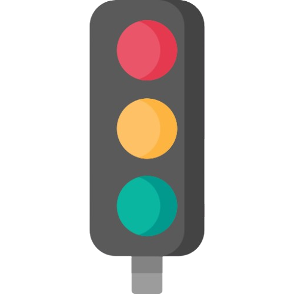

اختبار الدراجات النارية
أسئلة رخصة الدراجات النارية: إشارات السير، الأولوية، السرعة القصوى، وتجهيزات السلامة الخاصة بالدراجة.
ابدأ اختبار الدراجات الناريةتخليص كافة معاملات هيئة إدارة السير — واختبارات السوق النظرية أونلاين
اختر نوع الاختبار وابدأ التدرّب الآن — ٣٠ سؤال في كل اختبار

تعلم إشارات السير بسهولة
استعد لامتحان القيادة بثقة
اختبر نفسك في أي وقت
ثلاثة بنوك أسئلة منفصلة، كلٌّ منها مبني على أسئلة امتحان السوق النظري في لبنان. في كل محاولة يُسحب ٣٠ سؤالاً عشوائياً، فلا تتكرّر الورقة نفسها مرّتين.
أسئلة رخصة الدراجات النارية: إشارات السير، الأولوية، السرعة القصوى، وتجهيزات السلامة الخاصة بالدراجة.
ابدأ اختبار الدراجات الناريةأسئلة الرخصة الخاصة: قواعد السير العامة، إشارات الطريق، الوقوف والتجاوز، وأحكام السلامة المرورية.
ابدأ اختبار خصوصيأسئلة الرخصة الحمراء لسائقي النقل العمومي، وتشمل ما في اختبار خصوصي إضافةً إلى أنظمة النقل العام.
ابدأ اختبار عموميبدون تسجيل، بدون حساب، وبدون أي رسوم — وكل محاولة جديدة تعطيك ورقة أسئلة مختلفة.
إلى جانب التدرّب المجاني على الاختبار النظري، نتولّى تخليص كافة معاملات هيئة إدارة السير في لبنان نيابةً عنك.
كل اختبار على الموقع يتألف من ٣٠ سؤالاً تُسحب عشوائياً من بنك الأسئلة، والنجاح يحتاج ٢٤ إجابة صحيحة من أصل ٣٠.
نعم، التدرّب مجاني بالكامل وبدون تسجيل أو حساب. افتح الاختبار الذي تريده وابدأ مباشرة، وكرّره كما تشاء.
اختبار خصوصي مخصّص لرخصة السيارة الخاصة، واختبار عمومي (الرخصة الحمراء) لسائقي النقل العمومي ويشمل أسئلة إضافية عن أنظمة النقل العام. وهناك اختبار ثالث مستقل للدراجات النارية.
نعم، جزء كبير من الأسئلة يعرض صور إشارات السير المستعملة في لبنان ويطلب تحديد معناها، تماماً كما في الامتحان الرسمي.
نعم. بعد تأكيد إجابتك على أي سؤال تظهر لك الإجابة الصحيحة فوراً، وفي نهاية الاختبار تحصل على مراجعة كاملة لكل الأسئلة مع إجابتك والإجابة الصحيحة.
نعم، نقوم بتخليص كافة معاملات هيئة إدارة السير. للاستفسار اتصل على 03 450 763 أو 76 058 603، أو راسلنا على واتساب.